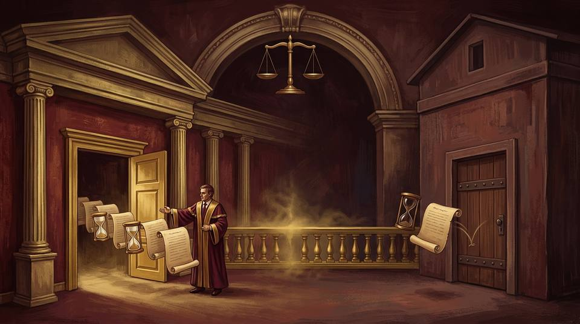
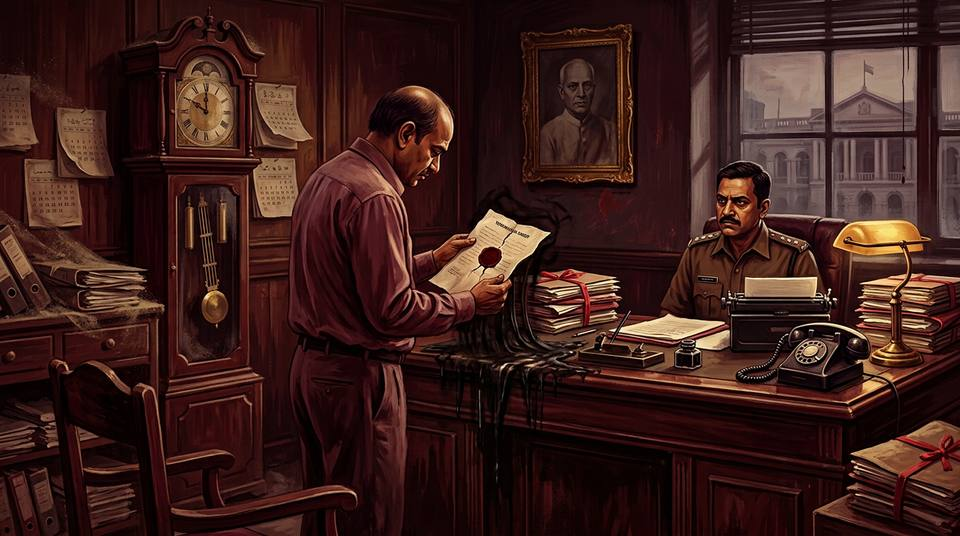
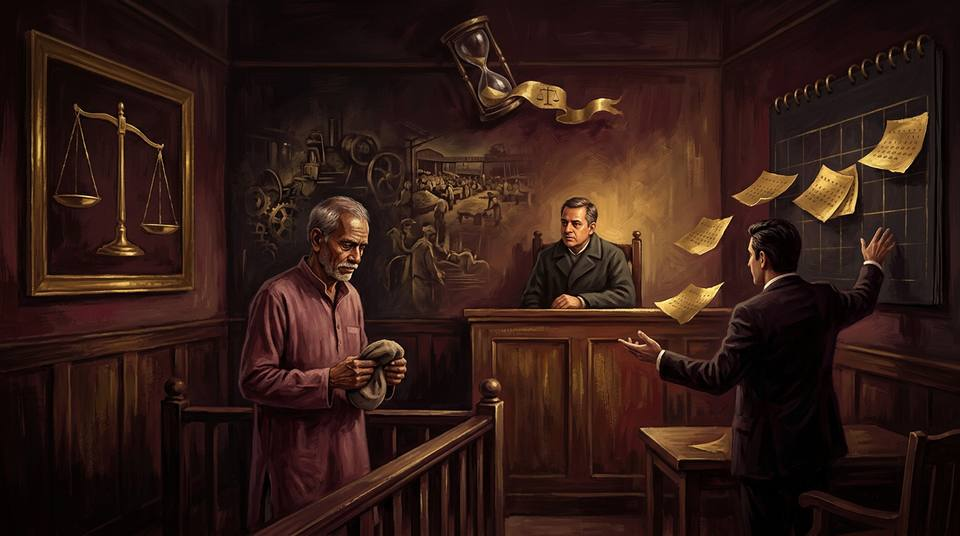

DU LL.B. (Hons.) · Civil Procedure Code & Limitation · Part B: Limitation
Topic 4 — The Schedule: Period of Limitation Articles 113 & 137, Limitation Act, 1963
The residuary provisions — any suit for which no period of limitation is provided elsewhere (Art. 113) and any other application for which no period is provided (Art. 137) — with the two prescribed cases (37–38) from the DU case material: State of Punjab v. Gurdev Singh and Ajaib Singh v. Sirhind Co-operative Marketing-cum-Processing Service Society Ltd.
Articles 113 · 137 (and old Art. 120/181)2 Prescribed Cases in Full Detail"Right to Sue Accrues" Deep-DiveCourts vs Tribunals under Art. 137DU PYQs with Model AnswersFlowcharts & Hypothetical Case Visuals
1
The Schedule — The Act's Clock-Room, and its Two Residuary Articles
How any suit or application, however novel, still finds its three years
Core Idea
Section 3 of the Limitation Act bars every suit, appeal or application filed after the prescribed period — and the periods live in the Schedule. The Schedule's articles are specific clocks for known proceedings; but the legislature could not foresee every suit or application. So it installed two residuary clocks at the end of each division: Art. 113 — any suit for which no period is provided elsewhere in the Schedule, three years from when the right to sue accrues; and Art. 137 — any other application for which no period is provided elsewhere in that division, three years from when the right to apply accrues. Neither is an afterthought: as Gurdev Singh holds, "the statute of limitation was intended to provide a time limit for all suits conceivable" — a suit outside every specific article falls into Art. 113 by necessity, not by grace.
1.1 Finding the Right Article — The Routing Rules
Specific beats residuary. The court first asks whether the suit falls within any specific article; only if none applies does Art. 113 (or, for applications, Art. 137) operate. The residuary article "is applicable to every variety of suits not otherwise provided for" (Gurdev Singh).
Characterise the relief, not the label. The court's function "on the presentation of plaint is simply to examine whether, on the assumed facts, the plaintiff is within time. The court has to find out when the 'right to sue' accrued" — i.e., when the cause of action arose, when the right asserted is infringed or there is a clear and unequivocal threat of infringement (Mt. Bolo v. Mt. Koklan, AIR 1930 PC 270; Gannon Dunkerley, (1969) 3 SCC 607).
Declaratory suits are suits. A suit by a dismissed employee for a declaration that his dismissal is void and that he continues in service is a suit like any other — it must find its article; it is not immune from limitation merely because it attacks a void order (Gurdev Singh, overruling the P&H line).
Set-off and counter-claim are suits (s. 3); appeals have their own articles (Arts. 114–118); applications live in the third division (Arts. 119–137).
The 1908 Act ancestry: Art. 120 of the old Act (six years, residuary for suits) became Art. 113 of the 1963 Act (three years); old Art. 181 (applications under the CPC and allied codes) became Art. 137 — with the added word "other", which (as Athani explains) imports an ejusdem generis reading against the earlier articles of that division.
The two residuary articles in one line eachArt. 113 (suits): "Any suit for which no period of limitation is provided elsewhere in this Schedule" — 3 years — "when the right to sue accrues." Art. 137 (applications): "Any other application for which no period of limitation is provided elsewhere in this Division" — 3 years — "when the right to apply accrues." Same period, same logic — but Art. 137 carries a jurisdictional limit the DU case material makes famous: it reaches applications to courts, not to tribunals that are not courts (Ajaib Singh).
1.2 "Right to Sue Accrues" — the Residuary Starting Point
The words "right to sue" ordinarily mean the right to seek relief by means of legal proceedings — generally the right accrues only when the cause of action arises: the right asserted is infringed, or threatened in a clear and unequivocal way (Bolo; Gannon Dunkerley; Gurdev Singh, para 6).
For a continuing wrong, each fresh infringement gives a fresh starting point (ss. 22–23 logic); for a suit attacking an order, the right to sue accrues when the order is made (or, where a statutory appeal/revision is pursued in time, when that remedy concludes against the challenger — as in Syed Qamarali, where the dismissal was 22-12-1945, the government rejected the appeal on 9-4-1947, and the suit of 8-12-1952 was within Art. 120's six years).
A void order still has de facto operation until quashed — "It bears no brand of invalidity on its forehead" (Smith v. East Elloe RDC, 1956 AC 736, Lord Radcliffe, quoted in Gurdev Singh) — so the aggrieved party must come to court within the residuary period, not whenever he pleases.
The Court in Gurdev Singh adopt Prof. Wade's summary: the court will invalidate an order only if "the right remedy is sought by the right person in the right proceedings and circumstances" — a nullity may remain effective in reality; hence even a void dismissal order starts the limitation clock for a declaratory suit.
Diagram 1 — Routing a proceeding to its clock
Diagram 1 — Every proceeding is routed to a clock: specific articles first, then the residuary articles; and Art. 137's jurisdictional gate — applications to courts, not to labour courts or tribunals.
2
Article 113 — Any Suit for Which No Period of Limitation is Provided Elsewhere
The residuary clock for suits: three years from the accrual of the right to sue
Hypothetical visual — the last drawer: the Schedule is a cabinet of labelled drawers, one for each known suit. A novel suit — the dismissed employee's declaration that his termination is void — fits no drawer; it drops into the one drawer that never closes: Article 113, with a three-year pocket watch beside it.
2.1 The Article
Article 113, Schedule, Limitation Act, 1963 — Part X: Suits for which there is no prescribed period
Description of suit
Period of limitation
Time from which period begins to run
113. Any suit for which no period of limitation is provided elsewhere in this Schedule.
Three years
When the right to sue accrues.
Ancestor: Article 120 of the Limitation Act, 1908 — same description, but six years. The 1963 Act deliberately halved the residuary period to three years (Gurdev Singh, para 6: "Under Article 120 it was six years which has been reduced to three years under Article 113"). Suits falling in the old residuary article thus got materially shorter lives.
Function: "The purpose of the residuary article is to provide for cases which could not be covered by any other provision in the Limitation Act. The residuary article is applicable to every variety of suits not otherwise provided for" (Gurdev Singh).
Exhaustive division: Part X is the Schedule's catch-all for suits; there is no gap through which a suit can escape limitation — that is the very premise on which Gurdev Singh overruled the Punjab & Haryana High Court's "no limitation for void-dismissal suits" line.
Contrast within the Schedule: Art. 112 (suits relating to trusts — 3 years where no other article applies, from the death of the trustee etc.) and Art. 91 (declaratory decrees) can compete for a suit's character; the correct one is chosen by the substantive relief sought, not by the plaintiff's nomenclature.
2.2 When does the "Right to Sue" Accrue?
The general rule (Bolo · Gannon Dunkerley)
The right to sue ordinarily accrues when the cause of action arises — "the right to prosecute to obtain relief by legal means." The suit must be instituted when the right asserted is infringed, or when there is a clear and unequivocal threat to infringe it by the defendant against whom the suit is brought. An abstract fear of future invasion does not start the clock; a present invasion or threat does.
The order-attack rule (Gurdev Singh)
For a suit attacking an order (dismissal, termination, resumption): the right to sue accrues when the order is passed — or, where the challenger pursues the statutory appeal/revision provided to him, when that pursuit finally fails (Syed Qamarali: dismissal 22-12-1945 → appeal rejected 9-4-1947 → suit 8-12-1952 within six years under Art. 120, 1908 Act). Sitting still after exhausting (or ignoring) the internal remedies lets the residuary clock run out.
Why a void order starts the clock (Gurdev Singh, paras 8–10, adopting Smith v. East Elloe and Wade): an order, "even if not made in good faith, is still an act capable of legal consequences. It bears no brand of invalidity on its forehead. Unless the necessary proceedings are taken at law to establish the cause of invalidity... it will remain as effective for its ostensible purpose as the most impeccable of orders." The party aggrieved must approach the court within the prescribed period; if the statutory time expires, "the court cannot give the declaration sought for."
Wade's corollary: a nullity remains effective until the right remedy is sought by the right person in the right proceedings — "the court will invalidate an order only if the right remedy is sought... The order may be hypothetically a nullity, but the court may refuse to quash it because of the plaintiff's lack of standing, because he does not deserve a discretionary remedy, because he has waived his rights, or for some other legal reason."
Distinction preserved: a declaration merely declares the existing state of affairs — it does not quash to produce a new one; so the employee's plea "my dismissal was void ab initio, so time never began" fails: the order's de facto operation is enough to require diligence.
The exam trap"There is no limitation for a suit for declaration" — wrong, says Gurdev Singh: such suits fall under Art. 113 (three years, from accrual of the right to sue), and s. 3 obliges the court to apply the bar even if limitation is not pleaded. The High Court view (P&H: Ajit Singh, Ram Singh) stood "not correct and stands overruled."
Diagram 2 — Article 113 in action: the dismissed employee's clock
Diagram 2 — The Art. 113 clock on a challenge to dismissal: the order's de facto operation starts time (or its confirmation on statutory appeal does), and the three-year residuary period swallows both Punjab suits in Gurdev Singh.
3
Article 137 — Limitation Where No Period is Prescribed (Applications)
The residuary clock for applications — and its jurisdictional frontier: courts, not tribunals

Hypothetical visual — the boundary: on the court side, petition-scrolls escort their three-year hourglasses through open golden doors; across the balustrade, an identical scroll bounces off the closed door of the industrial tribunal, its hourglass dimmed. Article 137 governs applications to courts — the Labour Court is not one.
3.1 The Article
Article 137, Schedule, Limitation Act, 1963 — Part II of the Third Division: Other Applications
Description of application
Period of limitation
Time from which period begins to run
137. Any other application for which no period of limitation is provided elsewhere in this Division.
Three years
When the right to apply accrues.
Scope: as the DU compendium puts it, Art. 137 is applicable to applications both under the CPC and under special Acts — it is the residuary article for applications, with limitation of three years beginning "when the right to apply accrues." It applies to any petition filed before a civil court.
The terminus a quo (Mela Ram v. Dharam Chand, AIR 1958 Punj 132, FB): in Art. 137 "the legislature makes provisions not for one definite type of cases, but for an unknown number of cases of all kinds. The provision which it makes is specific as regards the period of limitation but as regards the terminus a quo it is couched in general language and states, quite simply, the fundamental principle that for the purposes of any particular application time is to run from the moment at which the applicant first had the right to make it."
The word "other" (Athani): Art. 137 of the 1963 Act added "other" to old Art. 181's description — importing an ejusdem generis reading: the residuary article takes its colour from the earlier articles of the third division, which (Arbitration Act and two CrPC exceptions aside) govern applications under the Code of Civil Procedure.
The frontier (Ajaib Singh): the third division's articles apply to applications "presented to courts governed by the Code of Civil Procedure"; their scope "cannot be held to have been so enlarged as to include within them applications to bodies other than courts, such as a quasi-judicial tribunal, or even an executive authority." An Industrial Tribunal or Labour Court "is in no way governed either by the Code of Civil Procedure or the Code of Criminal Procedure" — Art. 137 does not reach it.
3.2 The Court/Tribunal Line — the Supporting Authorities
Bombay Gas Co. v. Gopal Bhiva (AIR 1964 SC 752): the provisions of Art. 181 (now Art. 137) apply only to applications made under the CPC; extending them to applications under s. 33-C(2) of the Industrial Disputes Act was not justified.
Town Municipal Council, Athani v. Presiding Officer, Labour Court ((1969) 1 SCC 873): the full reasoning — the third division contemplates applications to courts; not even the CrPC amendments "materially altered the scope of the residuary Article"; industrial adjudication lies outside.
Nityananda M. Joshi v. LIC ((1969) 2 SCC 199): applications under s. 33-C(2) ID Act are not governed by the Limitation Act's third division; only such limitation as the special law itself provides (there, none) applies.
Sakuru v. Tanaji (AIR 1985 SC 1279): the Limitation Act applies only to proceedings in courts, not to appeals or applications before other bodies — even where those bodies wield specified powers of civil/criminal courts.
Sha Mulchand & Co. v. Jawar Mills (AIR 1953 SC 98): the Arbitration Act entries in the old third division did not change the residuary article's CPC character — the analogy Athani applies to the CrPC entries.
The consequence for delay (Ajaib Singh)Because Art. 137 does not apply to Industrial Disputes Act proceedings, a workman's reference is not stale with age: "the relief under it cannot be denied to the workman merely on the ground of delay. The plea of delay if raised by the employer is required to be proved as a matter of fact by showing the real prejudice and not as a merely hypothetical defence. No reference to the Labour Court can be generally questioned on the ground of delay alone." Where delay is shown, the answer is to mould the relief — decline or cut back wages — not to destroy the claim (Jai Bhagwan: reinstatement without back wages; HMT v. Labour Court (1994) 2 SCC 38: 60% back wages after 14 years' delay).
Diagram 3 — Article 137's fork: court or not?
Diagram 3 — The Article 137 fork: applications to civil courts fall under the three-year residuary article; applications to labour courts and tribunals fall outside it — and in that unmapped territory, delay is a question of fact and prejudice, answered by moulding relief.
THE PRESCRIBED CASES · Part B: Limitation — Topic 4, pp. 208–216 of the DU case material
⚖
The Prescribed Cases — DU Case Material
Full commentary: facts → issues → arguments → decision → principle evolved, with hypothetical visuals
How the Two Cases Divide the Topic
Case
The question it answers
One-line answer
37. State of Punjab v. Gurdev Singh (1991) 4 SCC 1 (Jagannatha Shetty, J.)
Is there really no limitation for a dismissed employee's suit for declaration that he continues in service because his dismissal was void?
There is. The suit falls under Art. 113 (residuary; 3 years from accrual of the right to sue); even a void order has de facto operation; P&H "no limitation" line overruled.
38. Ajaib Singh v. Sirhind Coop. Society AIR 1999 SC 1351 (R.P. Sethi, J.)
Does Art. 137 govern a workman's demand for reference to the Labour Court under the Industrial Disputes Act — so that a 7-year delay defeats him?
No. Art. 137 applies only to applications to courts; the Labour Court is a tribunal — delay must be pleaded and proved as prejudice, and met by moulding relief, not by barring the claim.
Read them as one arcBoth cases ask the same master question — what happens where no specific limitation is prescribed? — and answer it from the two ends of the Schedule: for suits, Gurdev Singh says there is always Art. 113 (no suit is limitation-free); for applications to non-court fora, Ajaib Singh says Art. 137 simply does not follow you there (no limitation at all — only fact-specific delay and moulded relief). Together they map the whole residuary terrain.
CASE 37 · from the DU case material, p. 208
CASE 37 — DU CASE MATERIAL · SUB-TOPIC (a): ARTICLE 113
State of Punjab v. Gurdev Singh
(1991) 4 SCC 1 | Supreme Court of India | Jagannatha Shetty, J. | State's appeals against the Punjab & Haryana High Court
Art. 113 residuary3 years · old Art. 120: 6right to sue accruesvoid order, de facto operationdismissed employee's declarationP&H line overruled

Hypothetical visual — the order that would not die, and the suit that arrived too late: the termination order, stamped and sealed, keeps casting its shadow — "no brand of invalidity on its forehead" — while years pass at the office desk. When the suit finally comes in 1984, the residuary clock of Article 113 has long since run out.
Facts in Detail — Two Lead Appeals
C.A. No. 1852 of 1989 (the sub-inspector): the respondent was appointed an ad hoc sub-inspector in the District Food and Supply Department, Punjab. He absented himself from duty with effect from 29-9-1975; his services were terminated on 27-1-1977. On 18-4-1984 — over seven years later — he instituted a suit for a declaration that the termination order was against the principles of natural justice and his terms of employment, void and inoperative, and that he continued to be in service. The State resisted, pleading (inter alia) that the termination was as per the terms of his ad hoc appointment and that the suit was barred by time. The trial court accepted the limitation plea and dismissed the suit; the Additional District Judge, Jullundur reversed — the termination, though simpliciter, was punitive (unauthorised absence punished without enquiry or opportunity), and "no limitation is prescribed for challenging an illegal order." The High Court agreed in second appeal, following its earlier decisions.
C.A. No. 4772 of 1982 (the constable): the respondent, a Railway Police Constable appointed 14-11-1977, was discharged on 15-3-1979 for misconduct; his departmental appeal was rejected on 15-6-1979 (AIG, Railways, Patiala) and his revision dismissed on 30-11-1979 (Inspector General of Police, Punjab). On 12-2-1985 — more than five years after the revision failed — he sued for a declaration that the discharge (and its confirmation) was illegal, ultra vires, unconstitutional, against natural justice, and that he continued in service as constable. The trial court dismissed; the Additional District Judge decreed ("discharge in contravention of mandatory rules has no legal effect; there is no period of limitation"); the High Court dismissed the State's second appeal in limine.
The High Court's standing position: the P&H High Court had "repeatedly held" that where dismissal/discharge/termination is illegal, unconstitutional or against natural justice, "the employee can approach the court at any time" — the suit is not governed by any provision of the Limitation Act (State of Punjab v. Ajit Singh, (1988) 1 SLR 96 (P&H); State of Punjab v. Ram Singh, (1986) 3 SLR 379 (P&H)).
The Gurdev Singh Timeline — C.A. 1852/1989
29-9-1975
Sub-inspector begins unauthorised absence from duty.
27-1-1977
Services terminated — the order that, void or not, governs de facto.
Art. 113 window
Three years from the accrual of the right to sue — expiring by early 1980.
18-4-1984
Suit for declaration + continuance in service — seven years after termination.
Trial → ADJ → HC
Trial: barred → ADJ: decreed ("no limitation for illegal order") → HC: agreed, following its line.
A "short issue": what limitation governs a dismissed employee's suit for declaration that he continues in service, his dismissal being void and inoperative? Is such a suit outside the Limitation Act altogether, as the High Court held, or does it fall to be measured by the residuary article — and from when?
Arguments for the employees (respondents)
No limitation for illegal orders: an order passed in breach of mandatory service rules is a nullity — void ab initio, of no legal existence; nothing needs to be "set aside," so no clock can start; the employee may sue whenever he chooses (the High Court's settled line, and the ADJs' reasoning below).
A declaration merely states what the law already is — it creates no new state of affairs — so the suit is not a "remedy" that limitation can bar.
Reliance on State of M.P. v. Syed Qamarali ((1967) 1 SLR 228 (SC)): where a dismissal order breaches mandatory provisions, "it had no legal existence and it was not necessary for the respondent to have the order set aside by a court" — the limitation defence "must therefore be rejected."
Arguments for the State of Punjab (appellants)
No suit is limitation-free: s. 3 commands dismissal of every late suit, even unpleaded; the Schedule's specific articles plus the residuary Art. 113 cover "all suits conceivable."
A declaratory suit by a dismissed employee is a civil suit like any other; if no specific article fits, Art. 113 does — three years from when the right to sue accrued (the termination or its confirmation on statutory remedy).
Even a void order has de facto operation until quashed (Smith v. East Eloe, Lord Radcliffe): the employee cannot sleep for years and then demand a declaration.
Syed Qamarali is distinguishable: that suit was brought within six years of the appellate rejection — the Court there never held such suits escape limitation.
The Decision — Jagannatha Shetty, J.
No suit escapes the Act (para 6): "to say that the suit is not governed by the law of limitation runs afoul of our Limitation Act. The statute of limitation was intended to provide a time limit for all suits conceivable." s. 3 mandates dismissal after the prescribed period, "although limitation has not been set up as a defence"; s. 2(j) defines "period of limitation" (Schedule period) and "prescribed period" (period computed under the Act). The court, on presentation of the plaint, examines whether on the assumed facts the plaintiff is in time — when did the right to sue accrue? If no specific article applies, the residuary article takes over: "The purpose of the residuary article is to provide for cases which could not be covered by any other provision... Article 113 (corresponding to Article 120 of the Act of 1908) is a residuary article... It prescribes a period of three years when the right to sue accrues. Under Article 120 it was six years which has been reduced to three years under Article 113." The words "right to sue" mean the right to seek relief by legal proceedings; the right accrues when the cause of action arises — infringement of the right asserted, or a clear and unequivocal threat to infringe it (Mt. Bolo; Gannon Dunkerley).
Void ≠ timeless (paras 7–10): "we may assume that the order of dismissal was void, inoperative and ultra vires, and not voidable... But nonetheless the impugned dismissal order has at least a de facto operation unless and until it is declared to be void or nullity by a competent body or court." Lord Radcliffe in Smith v. East Elloe: "An order, even if not made in good faith, is still an act capable of legal consequences. It bears no brand of invalidity on its forehead. Unless the necessary proceedings are taken at law to establish the cause of invalidity and to get it quashed or otherwise upset, it will remain as effective for its ostensible purpose as the most impeccable of orders." Prof. Wade's principles adopted: the court will invalidate only if the right remedy is sought by the right person in the right circumstances; "the party aggrieved by the invalidity of the order has to approach the court for relief of declaration... within the prescribed period of limitation. If the statutory time limit expires the court cannot give the declaration sought for."
Syed Qamarali distinguished (paras 11–12): there, the dismissal (22-12-1945) was challenged by appeal, rejected 9-4-1947; the suit (8-12-1952) came within six years of the accrual of the right to sue under Art. 120 — "These observations are of little assistance to the plaintiffs in the present case... Syed Qamarali brought the suit within the period of limitation." The contrary High Court view — that such a declaration "runs afoul" of nothing — stands disapproved.
The correct rule (para 13): "A suit for declaration that an order of dismissal or termination from service passed against the plaintiff is wrongful, illegal or ultra vires is governed by Article 113 of the Limitation Act. The decision to the contrary taken by the Punjab and Haryana High Court in these and other cases (State of Punjab v. Ajit Singh and State of Punjab v. Ram Singh) is not correct and stands overruled." (Approving: Jagdish Prasad Mathur v. United Provinces Government, AIR 1956 All 114; Abdul Vakil v. Secretary of State, AIR 1943 Oudh 368.)
Result (para 14): appeals allowed; High Court judgments and decrees set aside; the suits dismissed in each case; no order as to costs.
PRINCIPLE EVOLVED
No suit is beyond limitation: every suit — including a declaratory suit attacking a void order — finds a clock in the Schedule; if no specific article fits, Art. 113 applies: three years from accrual of the right to sue.
"Right to sue" = cause of action in motion: the accrual is the infringement (or clear, unequivocal threat of infringement) of the right asserted; for orders, the order itself (or its confirmation on the statutory remedy pursued) starts time.
A void order has de facto operation until unmade: "it bears no brand of invalidity on its forehead" — diligence is the price of the declaration; delay beyond the residuary period is fatal, even if the order is ultra vires.
Statutory internal remedies can defer the start: where a departmental appeal/revision is pursued, the right to sue crystallises only when that pursuit fails (Syed Qamarali — a six-years-in-time suit).
High Courts cannot carve limitation-free zones for classes of suits — the residuary article is exhaustive coverage, and s. 3 makes the bar mandatory and suo motu.
CASE 38 · from the DU case material, p. 212
CASE 38 — DU CASE MATERIAL · SUB-TOPIC (b): ARTICLE 137
Ajaib Singh v. Sirhind Co-operative Marketing-cum-Processing Service Society Ltd.
AIR 1999 SC 1351 | Supreme Court of India | R.P. Sethi, J. | Workman's appeal from the Punjab & Haryana High Court (writ jurisdiction)
Art. 137 inapplicableLabour Court ≠ court7-year delaydelay must be provedmoulding reliefsocial justice

Hypothetical visual — seven years and a tilted scale: the workman, cap in hand, before the plain bench of a tribunal that is not a court; opposite him, the employer's counsel gestures at seven torn calendar pages. The balance tilts toward the workman — the Industrial Disputes Act is social welfare legislation, and Article 137's three-year clock was never installed in this hall.
Facts in Detail
The appellant workman's services were terminated on 16-7-1974 by the respondent management (a co-operative marketing-cum-processing society), allegedly without compliance with the mandatory provisions of the Industrial Disputes Act, 1947.
The management's justification: the workman, a salesman, had embezzled thousands of rupees. It also disputed the Labour Court's jurisdiction over the reference.
The workman issued his notice of demand only on 8-12-1981 — seven years later. The dispute was referred to the Labour Court by the appropriate Government on 19-3-1982. The jurisdiction objection was not pressed before the Labour Court.
Award, 16-4-1986: the Labour Court directed reinstatement with full back wages from 8-12-1981 (the demand date).
The management moved the High Court under Art. 226 — not on merits but on delay: the workman "had slept over the matter for 7 years and confronted the management at a belated stage when it might have been difficult for the employer to prove the guilt of the workman." The Single Judge allowed the writ; the Division Bench affirmed. The workman appealed to the Supreme Court.
Undisputed before the SC: termination 16-7-1974; demand notice 8-12-1981; no plea of delay was taken by the management before the Labour Court (as the issues framed show — the only defences were jurisdiction and justification); and Art. 137 has not been specifically made applicable to ID Act reference proceedings, nor had this Court ever held it so applicable.
The Ajaib Singh Timeline
16-7-1974
Workman (a salesman, allegedly an embezzler) terminated — allegedly in breach of the ID Act's mandatory provisions.
8-12-1981
Notice of demand issued — after seven years (the "prolonged delay" on which the writ proceeded).
19-3-1982
Appropriate Government refers the dispute to the Labour Court.
16-4-1986
Labour Court's award: reinstatement with full back wages from 8-12-1981.
Writ → DB
Single Judge quashes the award on pure delay (7 years, no explanation); Division Bench affirms.
1999
Supreme Court: Art. 137 inapplicable to ID Act proceedings; delay must be pleaded and proved; award restored — with back wages moulded to 60%.
Issues
Is Art. 137 of the Limitation Act, 1963 (or its principle) applicable to proceedings under the Industrial Disputes Act — the making of a reference under s. 10 / an application to the Labour Court — so that a workman's demand is time-barred after three years?
If not, what role does delay play — can relief be denied to a workman merely on the ground of unexplained delay?
Can a court prescribe a period of limitation (as the P&H Full Bench had — five years for raising demands) where the legislature has enacted none?
Arguments for Ajaib Singh (workman-appellant)
Art. 137 and its principle cannot apply to ID Act references — the special provisions of the Act must be respected, it being social welfare legislation intended to protect workmen; the management's reliance on judgments under other enactments was misconceived.
The management never pleaded delay before the Labour Court (issues framed show only jurisdiction and justification); the workman was never given a chance to explain the delay — the High Court's findings were returned without pleadings.
The Labour Court, a tribunal, is not a court governed by the CPC — the settled line from Bombay Gas, Athani, Nityananda Joshi and Sakuru keeps the Limitation Act's third division out.
"A fight between the workman and the management is not a fight between equals" — an even-handed balancing that frustrates the Act's social object is impermissible.
Arguments for the Society (respondent-management)
The principle of Art. 137, though not specifically made applicable, should be deemed applicable to references under s. 10 of the ID Act — a demand raised after seven years should not travel (supported by judgments under various enactments).
The workman "slept over the matter for 7 years": it would be difficult now for the employer to prove the workman's guilt (of embezzlement) — the High Court was right to quash the award.
Support from the P&H Full Bench in Ram Chander Morya v. State of Haryana ((1999) 1 SCT 141): "reasonable time in the cases of labour for demand of reference or dispute by appropriate Government to labour tribunals will be five years after which the Government can refuse to make a reference on the ground of delay and laches if there is no explanation."
The Decision — R.P. Sethi, J.
The Act's object first (para 5): the ID Act was enacted "to ensure social justice to both the employers and employees and advance the progress of industry by bringing about... harmony"; it improves service conditions, secures industrial peace, and more production (Hindustan Antibiotics v. Workmen, AIR 1967 SC 948); its provisions "have to be interpreted in a manner which advances the object of the legislature"; courts emphasise the "doctrine of social justice, founded on the basic ideal of socio-economic equality enshrined in the Preamble."
Art. 137 stays outside (paras 7–8):Bombay Gas — Art. 181 (now 137) applies only to applications made under the CPC; Town Municipal Council, Athni — the third division contemplates applications presented to courts; the word "other" imports an ejusdem generis reading; "An Industrial Tribunal or Labour Court... are not courts and they are in no way governed either by the Code of Civil Procedure or the Code of Criminal Procedure. We cannot, therefore, accept the submission... that this article will apply even to applications made to an Industrial Tribunal or a Labour Court." Sakuru v. Tanaji reiterated: the Limitation Act applies only to proceedings in courts, not before quasi-judicial tribunals or executive authorities, "notwithstanding that such bodies may be vested with certain specified powers conferred on courts."
The consequence (para 10): "the provisions of Article 137... are not applicable to the proceedings under the Act and that the relief under it cannot be denied to the workman merely on the ground of delay. The plea of delay if raised by the employer is required to be proved as a matter of fact by showing the real prejudice and not as a merely hypothetical defence. No reference to the Labour Court can be generally questioned on the ground of delay alone. Even in a case where the delay is shown to be existing, the tribunal, labour court or board... can appropriately mould the relief by declining to grant back wages... till the date he raised the demand... or... direct the payment of part of the back wages instead of full back wages" (as in Jai Bhagwan v. Ambala Central Coop. Bank, AIR 1984 SC 286 — reinstatement without back wages; HMT v. Labour Court, (1994) 2 SCC 38 — 60% back wages after 14 years' delay).
Courts cannot legislate limitation (para 10, on Ram Chander Morya): the P&H Full Bench's five-year rule "completely ignored the object of the Act and various pronouncements of this Court... and thus is not a good law." — "It is not the function of the court to prescribe the limitation where the legislature in its wisdom had thought it fit not to prescribe any period. The courts admittedly interpret law and do not make laws. Personal views of the Judges... cannot be stretched to authorise them to interpret law in such a manner, which would amount to legislation intentionally left over by the legislature."
The writ jurisdiction misfired (para 11): no plea of delay before the Labour Court; had it been raised, the workman could have explained; "the findings of fact returned by the High Court in writ proceedings, even without pleadings were, therefore, unjustified"; the HC's "even-handed justice" balancing "totally ignores the aims and object and the social object sought to be achieved by the Act" — "it is true that a fight between the workman and the management is not a just fight between equals," and the Court could not make them equals so as to frustrate the enactment; the HC "substituted its opinion for the opinion of the Labour Court, which was not permissible" under Arts. 226/227.
Result (para 12): appeal allowed; award upheld with modification — reinstatement with continuity of service; back wages at 60% from 8-12-1981 (the demand date) until the award (16-4-1986), and full back wages thereafter until reinstatement; costs of ₹5,000 payable by the management.
PRINCIPLE EVOLVED
Art. 137 is court-bound: the residuary article for applications governs applications to civil courts (CPC and, where the third division reaches them, allied codes) — not to labour courts, industrial tribunals or executive authorities, whatever powers those bodies wield.
No limitation prescribed → delay is a fact question: where a special welfare statute prescribes no period, relief cannot be denied "merely on the ground of delay"; the employer must plead and prove delay and real prejudice; a reference cannot generally be questioned on delay alone.
Moulding, not destruction: the answer to proved delay is calibrated relief — denial of back wages up to the demand date, or part back wages (Jai Bhagwan; HMT; applied here: 60% + costs).
Judicial legislation forbidden: courts cannot prescribe periods of limitation the legislature deliberately omitted; the P&H Full Bench's five-year rule "is not good law."
Writ courts respect adjudicatory findings: findings returned without pleadings, and balancing that ignores a welfare statute's object, exceed Arts. 226/227 — the unequal contest between workman and management is the very reason the Act exists.
THE SUPPORTING CAST · every authority the DU material cites, at a glance
📜
The Supporting Case Treasury
Both DU cases are built on lines of authority. One line each — so that no citation in the exam hall surprises you.
A · The Article 113 line — every suit has a clock (Gurdev Singh's spine)
Case
Contribution
Mt. Bolo v. Mt. Koklan AIR 1930 PC 270
Privy Council anchor for the terminus a quo: the right to sue means the right to seek relief by legal proceedings; time runs from when the right is infringed or threatened.
Gannon Dunkerley & Co. v. Union of India (1969) 3 SCC 607
"Right to sue" accrues when the cause of action arises — the accrual rule quoted in Gurdev Singh for Art. 113's third column.
Smith v. East Elloe RDC [1956] AC 736 (Lord Radcliffe)
"An order, even if not made in good faith, is still an act capable of legal consequences. It bears no brand of invalidity on its forehead" — the de facto operation of a void order until quashed.
Prof. W. Wade (Administrative Law, quoted at para 9)
The court invalidates only if the right remedy is sought by the right person in the right circumstances; a nullity may remain effective in reality — hence limitation applies even to void-order challenges.
State of M.P. v. Syed Qamarali (1967) 1 SLR 228 (SC)
Dismissal in breach of mandatory rules "totally invalid... no legal existence"; but the suit was within six years of the appeal's rejection under Art. 120 — precedent for deferring accrual, not for immunity from limitation.
Jagdish Prasad Mathur v. U.P. Government AIR 1956 All 114 · Abdul Vakil v. Secretary of State AIR 1943 Oudh 368
The Allahabad/Oudh line — declaratory suits against void dismissals ARE governed by the residuary article — approved and adopted by Gurdev Singh.
State of Punjab v. Ajit Singh (1988) 1 SLR 96 (P&H) · State of Punjab v. Ram Singh (1986) 3 SLR 379 (P&H)
The overruled line — "no limitation" for void-dismissal declarations; expressly overruled in para 13 of Gurdev Singh.
B · The Article 137 line — courts, tribunals and the residuary article (Ajaib Singh's spine)
Case
Contribution
Sha Mulchand & Co. v. Jawar Mills AIR 1953 SC 98
The Arbitration Act entries in the old third division did not alter the residuary article's CPC character — the analogy Athani builds on.
Bombay Gas Co. v. Gopal Bhiva AIR 1964 SC 752
Art. 181 (now 137) applies only to applications made under the CPC; its extension to s. 33-C(2) ID Act applications unjustified.
Town Municipal Council, Athani v. Presiding Officer, Labour Court (1969) 1 SCC 873
The master reasoning: "other" = ejusdem generis; the third division contemplates applications to courts; labour courts/tribunals lie outside.
Nityananda M. Joshi v. LIC of India (1969) 2 SCC 199
s. 33-C(2) applications are outside the Limitation Act's third division; Athani approved.
Sakuru v. Tanaji AIR 1985 SC 1279
The Limitation Act applies only to proceedings in courts, not to appeals/applications before tribunals or executive authorities, even with court-like powers.
Mela Ram v. Dharam Chand AIR 1958 Punj 132 (FB)
Art. 137's terminus a quo: "for the purposes of any particular application time is to run from the moment at which the applicant first had the right to make it."
Jai Bhagwan v. Ambala Central Coop. Bank AIR 1984 SC 286
Delay answered by relief-moulding: reinstatement with continuity, but no back wages for the period of the workman's inaction.
HMT Ltd. v. Labour Court (1994) 2 SCC 38
14 years' delay: reinstatement with 60% back wages — the template Ajaib Singh applied.
Ram Chander Morya v. State of Haryana (1999) 1 SCT 141 (P&H FB)
The five-year "reasonable time" rule for raising industrial demands — disapproved: "courts interpret law and do not make laws."
C · Welfare-statute context — the ID Act's interpretive climate
Case
Contribution
Hindustan Antibiotics Ltd. v. Workmen AIR 1967 SC 948
The ID Act's object: better service conditions, industrial peace, more production, national prosperity — the purpose lens Ajaib Singh applies.
s. 29(2), Limitation Act (doctrinal anchor)
Where a special law prescribes a period but not the exclusion machinery, ss. 4–24 apply unless expressly excluded — the counterpart rule for special-law limitation; where the special law prescribes no period at all, Ajaib Singh shows the tribunal route leaves Art. 137 behind entirely.
Memory hook — the treasury in one breathBolo fixes accrual; Gannon repeats it; East Elloe brands no invalidity on any forehead; Wade dares you to seek the right remedy in time; Syed Qamarali chased his appeal and just survived six years; Ajit and Ram Singh promised no clocks and were overruled; Bombay Gas keeps Art. 137 inside the CPC; Athani builds the courts-only wall; Sakuru seals it; Mela Ram starts time at first entitlement; Jai Bhagwan trims the back wages; HMT halves them to 60; Morya invented five years and was told courts do not make laws; Ajaib Singh restores the award at 60% with costs.
⚖
Previous Year Questions — DU Semester Exams (with Model Answers)
Every DU PYQ on the residuary articles (Arts. 113 & 137) from the solved-papers compendium
PYQ — 2019
Q. 8(b)/2019 — Write a detailed note on: Limitation where no period is prescribed.
MODEL ANSWER — ARTICLE 137 (APPLICATIONS WITH NO PRESCRIBED PERIOD)
The provision. Art. 137, Schedule, Limitation Act, 1963: "Any other application for which no period of limitation is provided elsewhere in this Division" — three years — "when the right to apply accrues." It is the residuary article for applications, corresponding to Art. 181 of the 1908 Act.
Scope. Art. 137 applies to applications both under the CPC and under special Acts — to any petition filed before a civil court. The terminus a quo is fixed by the Full Bench in Mela Ram v. Dharam Chand, AIR 1958 Punj 132: the legislature "makes provisions not for one definite type of cases, but for an unknown number of cases of all kinds... as regards the terminus a quo it is couched in general language and states, quite simply, the fundamental principle that... time is to run from the moment at which the applicant first had the right to make it."
The jurisdictional limit — when Art. 137 is NOT attracted. Only applications to courts fall under it: it "does not apply to tribunals who are only quasi-judicial authorities and not courts." The line: Bombay Gas (Art. 181 only for CPC applications; not s. 33-C(2) ID Act); Town Municipal Council, Athani ("other" = ejusdem generis; the third division reaches applications to courts, not to "a quasi-judicial tribunal, or even an executive authority"); Nityananda Joshi (LIC s. 33-C(2) outside); Sakuru v. Tanaji (Limitation Act only for court proceedings, despite court-like powers).
The leading case — Ajaib Singh v. Sirhind Co-operative Marketing Society, AIR 1999 SC 1351. Workman terminated 16-7-1974; demand notice 8-12-1981; reference 19-3-1982; Labour Court's award (16-4-1986): reinstatement with full back wages; the High Court quashed the award on pure seven-year delay. Held (R.P. Sethi J.): (i) Art. 137 is not applicable to ID Act proceedings — the Labour Court is not a court, and the Limitation Act's third division cannot follow applications there; (ii) relief "cannot be denied to the workman merely on the ground of delay" — delay must be pleaded and proved as a matter of fact by showing real prejudice, "not [as] a merely hypothetical defence"; no reference can "generally [be] questioned on the ground of delay alone"; (iii) even proved delay is answered by moulding relief — declining back wages up to the demand date or awarding part back wages (Jai Bhagwan; HMT: 60% after 14 years); here the award was restored with 60% back wages from the demand date and ₹5,000 costs; (iv) courts cannot prescribe limitation where the legislature enacted none — the P&H Full Bench's five-year rule in Ram Chander Morya "is not good law": "courts interpret law and do not make laws."
The suits-side companion (one line, for completeness). For suits with no prescribed period, the residuary is Art. 113: three years from accrual of the right to suit — see Q.6(d)/2017 and Gurdev Singh below.
PYQ — 2017
Q. 6(d)/2017 — Write a short note on: Any suit for which no period of limitation is provided elsewhere.
MODEL ANSWER — ARTICLE 113 (SUITS WITH NO PRESCRIBED PERIOD)
The provision. Art. 113, Schedule, Limitation Act, 1963: "Any suit for which no period of limitation is provided elsewhere in this Schedule" — three years — "when the right to sue accrues." It replaced Art. 120 of the 1908 Act, which gave six years — the 1963 Act deliberately halved the residuary period.
Nature. The residuary article exists "to provide for cases which could not be covered by any other provision in the Limitation Act"; it "is applicable to every variety of suits not otherwise provided for" — so that no civil suit is limitation-free. With s. 3 (mandatory, suo motu dismissal), the combined effect is a time limit "for all suits conceivable."
The starting point. "Right to sue" = the right to seek relief by legal proceedings; it accrues when the cause of action arises — when the right asserted is infringed, or there is a clear and unequivocal threat of infringement (Mt. Bolo v. Mt. Koklan; Gannon Dunkerley).
The leading case — State of Punjab v. Gurdev Singh, (1991) 4 SCC 1. Two dismissed employees (a sub-inspector: terminated 27-1-1977, suit 18-4-1984; a constable: discharged 15-3-1979, statutory appeal and revision exhausted by 30-11-1979, suit 12-2-1985) sued for declarations that they continued in service, their dismissals being void. The P&H High Court had held such suits carried no limitation at all. The Supreme Court (Jagannatha Shetty J.) overruled that line: such a suit is governed by Art. 113 — three years from accrual of the right to sue. Even a void order "bears no brand of invalidity on its forehead" and has de facto operation until quashed (Smith v. East Eloe); the aggrieved party must sue within the prescribed time. Syed Qamarali was distinguishable — that plaintiff had sued within six years of the rejection of his departmental appeal. Result: both suits dismissed as time-barred; Ajit Singh and Ram Singh (P&H) overruled.
Illustrations. (1) A suit for declaration that a void dismissal does not bind the plaintiff — Art. 113 from the order (or its confirmation on statutory remedy). (2) A novel tort or statutory claim with no specific article — Art. 113 from accrual of the cause of action. (3) A claim that has a specific article (e.g., Art. 19 money lent) never falls to Art. 113 — the specific article always prevails.
Questions to Expect Next Time
“A government servant dismissed in 2015 files a suit in 2024 for a declaration that the dismissal was void. Decide.” — Art. 113; three years from the order (or exhaustion of the statutory remedy); suit barred; Gurdev Singh.
“Distinguish Article 113 from Article 137” — suits vs applications; "elsewhere in this Schedule" vs "in this Division"; the courts-only limit of Art. 137.
“Is there any proceeding to which the Limitation Act does not apply at all?” — proceedings before tribunals not governed by the CPC (Ajaib Singh; Sakuru); and where a special law has its own complete limitation scheme excluding the Act (s. 29(1)).
“A workman raises a demand after nine years — is he remediless?” — no: Art. 137 inapplicable; delay must be pleaded/proved with real prejudice; relief moulded (Jai Bhagwan; HMT; Ajaib Singh's 60%).
“Why did the residuary period fall from six years to three?” — legislative policy of accelerated repose in the 1963 Act; Gurdev Singh notes the change while applying the new period.
“Can a High Court prescribe a reasonable time where the statute is silent?” — no (Ram Chander Morya disapproved); only the legislature can set limitation.
⏳
Quick Revision Sheet — One Last Look Before the Hall
Articles 113 & 137 and the two cases, compressed
The Two Residuary Articles
Art. 113 (suits): "any suit … no period provided elsewhere in this Schedule" — 3 years — "when the right to sue accrues" (old Art. 120: 6 years). Art. 137 (applications): "any other application … in this Division" — 3 years — "when the right to apply accrues" (old Art. 181). Specific articles always prevail; the residuary catches only what nothing else catches.
The Accrual Rules
Right to sue applies = right to seek relief by legal proceedings = cause of action in motion: infringement or clear, unequivocal threat (Bolo; Gannon Dunkerley). For order-attacks: from the order — or from the failure of the statutory appeal/revision (Syed Qamarali). For applications: from "the moment at which the applicant first had the right to make it" (Mela Ram, FB).
Case 37 — Gurdev Singh (1991, Shetty J.)
Sub-inspector: absent 29-9-1975 → terminated 27-1-1977 → suit 18-4-1984 (7 yrs). Constable: discharged 15-3-1979 → appeal/revision failed by 30-11-1979 → suit 12-2-1985 (5+ yrs). P&H HC: "no limitation for void-dismissal suits" (Ajit Singh, Ram Singh). Held: Art. 113 (3 yrs); even a void order has de facto operation — "no brand of invalidity on its forehead" (East Elloe; Wade); s. 3 applies even unpleaded; Syed Qamarali distinguished (suit was in time under Art. 120); P&H line overruled; both suits dismissed.
Case 38 — Ajaib Singh (1999, Sethi J.)
Workman terminated 16-7-1974 (salesman; alleged embezzlement); demand 8-12-1981; reference 19-3-1982; award 16-4-1986 (reinstatement + full back wages); HC quashed on 7-year delay — no plea of delay was ever taken before the Labour Court. Held: Art. 137 inapplicable to ID Act proceedings (Labour Court ≠ court: Bombay Gas, Athani, Sakuru); delay must be pleaded & proved with real prejudice; remedy = mould relief (back wages cut); Ram Chander Morya's 5-year rule "not good law" — "courts interpret law and do not make laws"; award restored with 60% back wages from demand date + ₹5,000 costs.
The Court/Tribunal Wall
Art. 137 reaches applications presented to courts (CPC and, via the division, allied codes) — NOT labour courts, industrial tribunals, or executive authorities, "notwithstanding that such bodies may be vested with certain specified powers conferred on courts" (Sakuru). "Other" in Art. 137 = ejusdem generis with the earlier articles (Athani). Where no limitation applies at all: delay = question of fact + prejudice, answered by relief-moulding (Jai Bhagwan: no back wages; HMT: 60% after 14 years).
The Doctrinal Soundbites
"A time limit for all suits conceivable" (Gurdev Singh). "It bears no brand of invalidity on its forehead" (Lord Radcliffe). The right remedy, by the right person, in the right proceedings, in time (Wade). "Courts interpret law and do not make laws" (Ajaib Singh). "A fight between the workman and the management is not a fight between equals" (Ajaib Singh). Six years (Art. 120) → three years (Art. 113): the residuary was halved.
Memory Hooks
113 = suits, 137 = applications: one-three for suits in court; one-three-seven for petitions — both three years, both from accrual.
The halving: old 120 gave six; new 113 gives three — "120 half of 240, 113 is roughly half of 120's spirit."
East Eloe's forehead: no order walks around wearing "VOID" — it operates until a court says otherwise, so sue within three years.
Gurdev's two employees: the sub-inspector waited seven years; the constable exhausted appeals then waited five — both beaten by Art. 113's three.
Syed Qamarali's mercy: chase your departmental appeal and the clock waits for its rejection — but only the 1908 Act's six years saved him; three years today.
Athani's wall: "other" is a wall-word — Art. 137 lives in courts, and the Labour Court is on the other side of the balustrade.
Ajaib's 60%: delay proved → relief moulded, never the workman destroyed; and Morya's five-year invention was confiscated by the maxim: courts interpret, not legislate.
Case-number = fix: 37 fixes suits' residuary clock (no suit is free); 38 frees tribunal proceedings from Art. 137 (no clock at all — only facts and moulding).